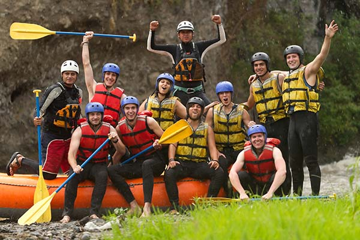

White Water Rafting

Fishing, Explotation, Aid in trading
HISTORY
Pre-1800’s: Native Americans were the first to navigate rivers and rapids in search of fish, game and new lands. 1804-1806: Lewis and Clark committed themselves to an arduous and dangerous expedition to map and explore the newly acquired Louisiana Purchase west of the Mississippi River. 1869: John Wesley Powell led a group of nine men on the first recorded expedition through the Grand Canyon. 1940’s: Rubber Rafts were introduced. 1950’s: Army Navy Surplus Rafts were used for commercial rafting trips.
Adventure Awaits You!

